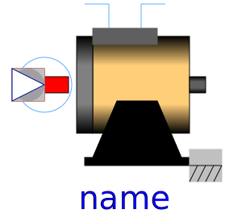
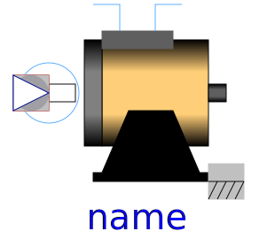

Quasi static synchronous machines
| Name | Description |
|---|---|
|  SM_PermanentMagnet | Permanent magnet synchronous machine with optional damper cage |
| SM_ElectricalExcited | Electrical excited synchronous machine with optional damper cage |
|  SM_ReluctanceRotor | Synchronous reluctance machine with optional damper cage |